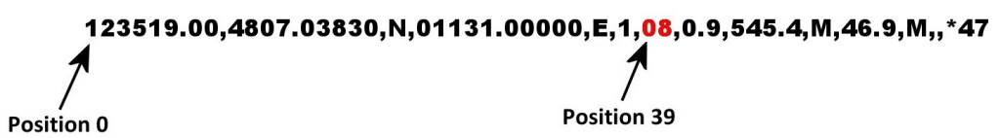
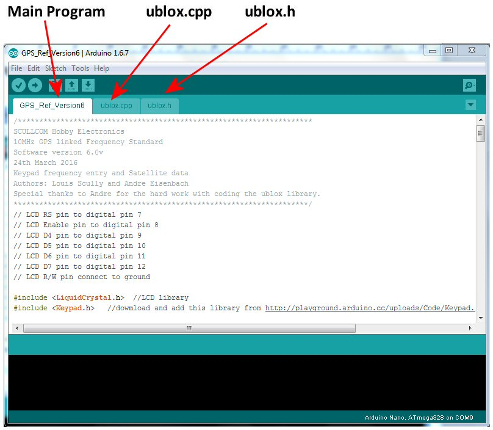
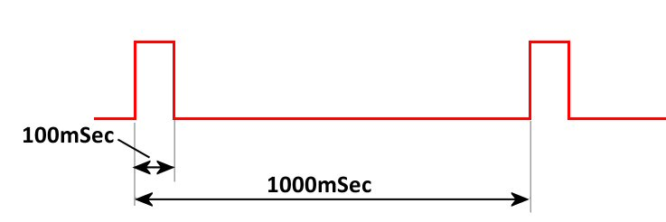

In this 4th part of this project we upgrade the software to give satellite data and frequency lock display. Plus the current frequency on the display is improved to give reading in MHz, KHz or Hz.
The new software version can be downloaded from the link below:
http://www.scullcom.com/GPS_Ref_Version6.zip
PLEASE NOTE TO COMPILE THIS CODE YOU NEED TO BE RUNNING THE LATEST VERSION OF ARDUINO IDE (version 1.6.7)
Below is a link to download a user guide on this project which includes circuit detail, PCB detailed layouts, schematics and software details. The file is a zip file which contains a PDF document:
http://www.scullcom.com/Scullcom_GPS_Ref_manual.zip
Reading the GPS module data to extract the number of Satellites detected
When the GPS module starts receiving satellite data it provides a constant stream of data sentences which are know as NMEA sentences. Within this data stream the most important NMEA sentences include the GGA which provides the current Fix data, the RMC which provides the minimum GPS sentences information, and the GSA which provides the Satellite status data. In our project we will use the GGA data stream to extract the number of satellites detected and locked on to.
Below is an example of a typical GGA data sentence:
$GPGGA,123519.00,4807.03830,N,01131.00000,E,1,08,0.9,545.4,M,46.9,M,,*47
Where:
- GGA Global Positioning System Fix Data
- 123519.00 Fix taken at 12:35:19 UTC (current time)
- 4807.03830,N Latitude 48 deg 07.038′ N
- 01131.00000,E Longitude 11 deg 31.000′ E
- 1 Fix quality: 0 = invalid, 1 = GPS fix (SPS), 2 = DGPS fix, 3 = PPS fix, 4 = Real Time Kinematic,
5 = Float RTK, 6 = estimated (dead reckoning) (2.3 feature), 7 = Manual input mode,
8 = Simulation mode - 08 Number of satellites being tracked
- 0.9 Horizontal dilution of position
- 545.4,M Altitude, Meters, above mean sea level
- 46.9,M Height of geoid (mean sea level) above WGS84 ellipsoid
- (empty field) time in seconds since last DGPS update
- (empty field) DGPS station ID number
- *47 the checksum data, always begins with *
We will be using the data highlighted above to show the number of satellite on our LCD. In order to extract this information we will set up a second Software Serial port.
First we need to identify the NMEA data we need to capture and we do this with the flowing code:
char gpsin[8] = “$GPGGA,”; //define a character string “$GPGGA,”
if (GPSreceiver.find(gpsin)) { //if serial data starts with the characters “$GPGGA,”
GPGGAdata = GPSreceiver.readStringUntil(‘\n’); //read data until carriage return
When the characters “$GPGGA,” are detected it starts reading the remainder of the string data in to the buffer. So the captured data starts from the first digit of the ‘time’ data (and not from the $ character). The captured data then looks as follows:
123519.00,4807.03830,N,01131.00000,E,1,08,0.9,545.4,M,46.9,M,,*47
With in the main loop we will use the substring command to extract the number of satellites from the GGA data sentence. This is a simply and easy way of extracting the data you wish to use. The substring command is defined as follows:
substring(index, to) – this returns a string with the characters starting from index and ending at the character location before the to
So to extract the number of satellites (highlighted in read) from the GGA data sentence below

We use the following code:
sats = GPGGAdata.substring(39,41);
The string “sats” now is equal to “08”
If you wanted to extract other data you simply need to change the “index, to” numbers in the substring. For example to extract the current time to a string labeled time then you would use:
time = GPGGAdata.substring(7,13); //the string “time” now is equal to “123519”
Details of Code used in program loop to extract number of satellites and display on LCD
//new variables added at start of program
String sats; //number of satellites detected
String GPGGAdata; //satellite data string from GPS module
String FreqStatus; //used to print Frequency locked if applicable
int satNum; //number of satellites detected as an integer
//set up a Software Serial port called GPSreceiver
SoftwareSerial GPSreceiver (14,255); //14(A0) is RX on Arduino connected to GPS TX pin.
//255 a nonexistent pin number used to free up a pin
//in void setup() include serial monitor command and set to 57600 baud.
Serial.begin(57600); //this is simply used for testing
//The # key used to tell the unit to display the number of satellites on LCD.
// below is the software code used in the main loop to show number of satellites when //“#” key pressed:
case '#'://# pressed Show number of satellites detected and frequency status
lcd.clear(); //clear LCD
lcd.print("Satellites ="); //print the word 'Satellites =' on the top line of LCD
do { //now loop
GPSreceiver.flush(); //clear any data which may be in the Serial Buffer
if (GPSreceiver.available()) //if any GPS data is available
{
GPSreceiver.read(); //read GPS serial data streams if available
}
char gpsin[8] = "$GPGGA,"; //define a character string “$GPGGA,”
if (GPSreceiver.find(gpsin)) { //if serial data starts with the characters “$GPGGA,”
GPGGAdata = GPSreceiver.readStringUntil('\n'); //read data until a carriage return
sats = GPGGAdata.substring(39,41); //extract number of satellites from data string
}
satNum = sats.toInt(); //convert sats string to an integer so as to remove leading zero
if (satNum >0){
FreqStatus = "Frequency Locked"; //if satellites detected the status string
//= “Frequency Locked”
}else{
FreqStatus = " "; //16 spaces to clear line if no lock
}
Serial.print(GPGGAdata); //These serial print lines are for testing using
//Serial Monitor
Serial.println(); //full GPGGA data sentence printed and then carriage return
Serial.print("Satellite = ");
Serial.print(satNum);
Serial.println();
Serial.print(FreqStatus);
Serial.println();
lcd.setCursor(13,0); //set cursor position to column 13 of row 0 (first line on LCD)
lcd.print(" "); //clears number if no satellites detected (3 spaces used)
lcd.setCursor(13,0); //set cursor position to column 13 of row 0 (first line on LCD)
lcd.print(satNum); //print number of satellites to LCD
lcd.setCursor(0,1); //set cursor position to column 0 of row 1 (second line on LCD)
lcd.print(FreqStatus); //print Frequency Locked status
}
while (customKeypad.getKey()!= '#'); //if # key pressed again break out of loop
displayCurrentFrequency(); //and display current frequency subroutine
break; //break and return to main program loop
The software for this project is made up of three parts all of which are include in a download zip file.
Once the file is unzipped you will have a folder as above. In this folder you will find the following files shown below:
Please ensure that you are running the latest version of the Arduino IDE which is “Arduino 1.6.7” (older versions may not work). Run the “GPS_Ref_Version6” file and you should find the software opens up in the Arduino IDE as shown below:

Now compile and upload the software to the Arduino nano on the main PCB.
GPS Locked Frequency Standard Project
This project will use a small GPS module which has the u-blox Neo-7 GPS receiver. These modules are readily available on sites like eBay for around £12, they tend to be advertised for use with flight controllers on model aircraft.
The u-blox receiver is normally fitted in the centre of a small PCB. Additional components on the PCB include a 3.3 volt Low Drop Voltage Regulator, timepulse and power on LED’s and EEPROM. There is also some short term back-up supply for the DRAM of the Neo-7 receiver by use of a 0.08F super capacitor (Seiko XH414HG). These capacitors normally only provide power off back-up for around a day or so if you are lucky.
These GPS modules are usually configured by default to provide a 1Hz timing pulse output which is normally used to flash a green LED to indicate when the unit has a fix on satellites and the local oscillator is locked to the GPS signal. By default this timing pulse provides a 100mSec pulse every 1000mSec, as shown below.

This timing pulse can be configured to provide different frequencies and different duty cycle and we will be using this option in this project to change the frequency and fix the duty cycle to 50%.
GPS satellites are primarily used as a navigation system; this global positioning system can also used to disseminate precise time, time intervals, and frequency. The GPS carrier signals originate from an on-board atomic clock (oscillator) which is also monitored and controlled by ground stations in the United States to ensure it agrees with the Coordinated Universal Time (UTC). UTC is the primary time standard by which the world regulates clocks and time.
Atomic clocks are based on the natural atomic oscillations of gases in resonant cavities. When isolated from magnetic fields, rubidium and cesium gases will resonate at specific frequencies under controlled conditions. These frequencies are so accurate that since 1967 the length of the second has been defined as the frequency of a specific resonant mode of the cesium atom, producing 9,192,631,770 oscillations in one second.
The u-blox receiver uses a built-in 48MHz oscillator.
There are various versions of the u-blox receiver available, some of which can be configured to provide a frequency pulse output in the range 0.25Hz to 10MHz. Those which are suitable for this project are listed in the table below:
| u-blox Receiver Type | Type of Memory fitted | Type of Oscillator used |
| Neo-6T | ROM | TCXO |
| Neo-7M | ROM | Crystal |
| Neo-7N | FLASH | TCXO |
| Neo-7P | FLASH | Crystal |
| Neo-M8M | ROM | Crystal |
| Neo-M8N | FLASH | TCXO |
| Neo-M8Q | ROM | Crystal |
In this project we will use the Neo-7M. As this uses a ROM, the option to use a 3 volt backup battery on the PCB will help to speed up satellite lock after switch-on (this is optional). If the back-up battery is not used it may take a few minutes before the unit locks on to satellites. If the Neo-7N version is used then as it uses a FLASH memory there is no need for a back-up supply.
Read my comments on youtube. The conclusion is that the mcu won’t output a clean clock without a PLL. It can only output a signal synchronized with the 48 MHz clock and will add extra cycles from time to time to generate the right number of cycles ON AVERAGE but not on a single period. With frequencies that are low enough the problem is reduced (because changing the half period by +- 1/48000000 s is negligeable if the half cycle is 1/48000s) but will never disappear.
I have found if you select any random frequency up to about 2 MHz the output always gives a nice clean square wave with no phase jitter. The output waveform of any frequency between 3 MHz to 4 MHz also stays fairly clean. Once you go higher than these frequencies the square wave has some phase noise but the frequency is still accurate when monitored on a frequency counter or spectrum analyser. Choosing frequencies which have a factor of 48 MHz like 4, 6, 8 or 12 MHz does show some slight improvement but the phase jitter on the waveform is still there. To remove this phase jitter altogether a Phase Locked Loop circuit could be used, but I will leave this for future project as it involves a second PCB with a Voltage Controlled Oscillator and a Programmable Frequency Divider in the feedback loop. The project as it stands at the moment does give out an accurate frequency reference signal so is still quite useful for the hobbyist and a good source of reference to check the accuracy of frequency counter.
Thanks for all your helpful work on this project.
Do you think you could give some advice on how to do the PLL circuit you suggested? It has been nearly a year and a half, and the PLL circuit is for me the most useful part of the project.
I believe the issues you are seeing with “phase distortion” are rather due to the pulse dropping method that ublox uses for synthesis of frequencies that are not integer multiples of the 48 MHz crystal frequency. This means that 12,8,6,4,2,1 MHz etc. will be clean but 10 MHz etc. will not.
Over an averaging period such as that used by a frequency counter the frequency will look spot on, but as you’ve demonstrated a spectrum analyzer and oscilloscope will notice the difference.
Louis,
What is the accuracy of the GPS reference ?
Thank you for your videos and your excellent teaching skills !!
Phil,
I have compared it with my rubidium standard which would mean to within a few parts in 10 to the power 11.
Hi Louis,
Where did you get your NEO module from ?
Would you trust Ali-very-fast for those modules at very very low price ?
Thanks for your projects and videos.
Hi David, I purchased mine on eBay and had no problems.
OK, thanks for your reply. I’ll give it a chance.
I hope to see new projects and new videos
Hi Louis,
Such a reference std has been on my to-do list for a couple of years. I happened upon your excellent video presentations and am encouraged to do something about it!
Is it possible to send me a 1:1 image of the final PCB? Ideally a reversed image would be excellent since I routinely use the ‘iron-on’ method for producing my PCBs.
Thanks,
Steve.
Hello Louis,
I got it working, and I am very impressed. My previous reference was a 100KHz signal derived from Droitwich. It is interesting to compare the two (with your design producing 100KHz of course). There appear locked of course, but after several hours there was a relative phase shift of about a quarter of a cycle. Probably of no practical consequence but mildly interesting.
If I might be cheeky enough to suggest two software changes:
It would be useful if the numeric keys were ignored until the “A” key is pushed. I have a habit of pushing a numeric button, and then remembering that I should have done an A first! Then, when the brain rights itself, using the A does not clear the junk already entered. So a nonsense frequency has to be sent before the process can be done properly.
Secondly, and related to that, a possible use for the * key would be to erase anything previously entered, to fix a misstype!
Nice project Louis. Thank you for it.
Tony
(G3PTD)
Louis
I have finally got down to building the frequency standard, but when I try to Arduino: 1.8.5 (Windows 10), Board: “Arduino/Genuino Uno” verify the program I get the following error message :
C:\Users\Robert\Documents\Arduino\GPS_Ref_Version6\GPS_Ref_Version6.ino:19:112: fatal error: Keypad.h: No such file or directory
#include //dowmload and add this library from http://playground.arduino.cc/uploads/Code/Keypad.zip
^
compilation terminated.
exit status 1
Error compiling for board Arduino/Genuino Uno.
This report would have more information with
“Show verbose output during compilation”
option enabled in File -> Preferences.
I can see the Keyboard.H program but as I am not familiar with the Adruino I am not sure in which file it should be residing . can you help?
Whilst I wa checking what I had done I noticed that you showed the original download as GPS_Ref_version5,
I could not find version 5 so used version6.
I can be contacted on 07974204219 or rileyr103nun@sky.com if you want any further details.
regards
bob riley
Hi Bob,
Sorry for delay only just seen your message.
You need to download the Keypad.h libary from the link I gave, namely;
http://playground.arduino.cc/uploads/Code/Keypad.zip
This will be a zip file which will be saved in your download folder.
You then need to install that library in your Arduino IDE.
There are basically two ways of doing this.
Below is a link to a You Tube video which describes both these methods. I would recommend you use the second method he explains as it is the simplest – it starts at 2.00 mins in to the video but I recommend you view the whole video first before doing it.
https://www.youtube.com/watch?v=d5LU1ig4BQQ
Once the library is installed you should be able to compile and upload the code. If you still have any issues then shut down the Arduino IDE software and then start the Arduino IDE again so it is reset – sometimes it needs to reset before the library is recognized.
Regards,
Louis
Regards,
Louis
Hi Louis
Please ignore my question about where the Keypad file had to go, having put it in manually I found out the correct (very simple) way to install it, so on to finishing the population of my board. Many thank for all yhe time and effort that it must take. It really is appreciated.
Regards
Bob R
Hi bob
how did you get the software to install on your arduino nano board .when i try to install the software i get a error (keypad.h no such file) could you please write back.
Allan pierron
Allan
Sorry for the delay but have only just seen your request
I cannot remember the exact procedure, but I went to the Arduino site.
https://www.arduino.cc/en/guide/homepage.
Learn Arduino
– libraries
How to install a library.
Got rid of all the rubbish that I had tried to enter, followed the instructions and it went in without any problems.
Good Luck it is well worth the effort.
Bob
Hi
I build your frequency standard .but I’m having a problem with the software.it will not let me install the gps_ref_version 6 on to the arduous nano .I on zipped gps_ref_version6 all three files are there gps_ref_version6 8k and ublox 3k and ublox.h 1k but when I try to up load it to the nano board I get a error saying (keypad.h no such file)?? and yes I’m running the latest version of Android 1.8.3
but it will let me up load arduous blink from the arduous library and it works I can make changes to the blink rate slower or faster no problem just can’t upload your software. plese write back.
Allan pierron
Hello Louis,
Thank you again for all the time and effort that you put into these fine projects
I have got my Frequency Standard working, and I am very impressed, It worked first time, (ignoring the slight problem when loading the Arduino Nano {refused to accept the keyboard.h file}.)
Looking forward to the next project.
Regards
Bob
Hi Bob,
Glad to hear you got it working. Sometimes installing Arduino libraries can be an issue.
All the best,
Louis
Can you advise the part number of the keypad you use and the source; most of the membrane keypads I’ve seen on eBay are the stick-on type and I would prefer to mount via screws to a front-panel.
Hi Nigel,
You should be able to get one from Farnells. There order code for the 4×4 Button Keypad is 1182239. Direct link below:
http://uk.farnell.com/multicomp/mcak1604nbwb/keypad-4×4-array-0-02a-24vdc-plastic/dp/1182239?st=matrix%20keypad
They are also available on eBay much cheaper – one example is the link below:
https://www.ebay.co.uk/itm/4×4-Matrix-Keyboard-Keypad-Module-Use-Key-PIC-AVR-Stamp-Plastic-Keys-Switch-UK/253005966171?hash=item3ae854ab5b:g:pKwAAOSwvjdZS9tW
Regards,
Louis
The project is a bit slow-going here (too many actually !) but I did buy a keypad similar to your design but just as an aside; what exactly is the difference between a “keypad” and a “membrane keypad”? I naively imagined they would have the same pin-out….. but of course not !!
I’ve decided that since the physics of my design are going to be substantially different to your layout that I might just as well use veroboard and do it the hard way.
Hello Louis,
I have been following your excellent projects for some time now, and am in the process of building the DC Voltage Calibrator and the GPS locked Frequency Reference. Do you have available the Gerber production files for the GPS Freq Ref. project ? I downloaded them for the DC Calibrator and had the pcb commercially manufactured, but it has been some time since I made my own boards photographically. Maybe you could email them to me if available, or post them as a link.
Keep up the fantastic projects and support videos. All the best – Kevin Pearce.
Hi Kevin,
I sent you an email with the gerber files and also the KiCad files for the latest double sided PCB (with no wire links required). I have alos made them available as downloads from the links below:
http://www.scullcom.com/GPS_Disciplined_Oscillator_Gerber_Files.zip
The PCB size is 100mm x 160mm
http://www.scullcom.com/GPS_Disciplined_Oscillator_KiCad_Files.zip
regards,
Louis
Thanks heaps Louis.
I never received your email (you may have left out the “g” in the middle), but I have successfully downloaded the files from your links.
I have ordered the PCB’s to be manufactured.
Still needing enough time to assemble your DC voltage calibrator, but will get to that shortly.
Thanks again for your very fast response, and my very best wishes for the future.
I will remain “glued” to your channel for as long as it exists.
Kindest regards, Kevin.
Hi Kevin,
I double check my email to you. I did use the correct email address, may be it is in your spam mail due to the fact that I added 2 zip files.
Anyway as long as you have the files you wanted from my download links here.
Regards,
Louis
Hi, Louis,
I am starting the process of building this project. I will be attempting to make a few changes, to accommodate my skill sets:
– Use of a PIC18F4550 microcontroller. Google “PIC 18F Pinquino”
– Use of the chips PLL, to calm jitters
– Use the chip’s memory, instead of a separate EEPROM
– Use of C Code
– Use of all 3.3 volt components, to reduce power usage and give better battery life.
3.3 volt, 1602 character displays are available on Ebay. You need to specify the voltage, in the search terms and read the description, carefully. I have had good experiences, with this seller:
https://www.ebay.com/itm/DC-3-3V-HD44780-1602-LCD-Display-Module-16×2-Character-LCM-Blue-Blacklight-NEW/191563253688?ssPageName=STRK%3AMEBIDX%3AIT&_trksid=p2057872.m2749.l2649
I have ordered some of the larger components. The GPS module has arrived. At 3.3 volts, I was able to configure it (thanks to your great tutorial, in Episode #1) and fully acquire a signal lock. I used this USB to TTL Converter:
https://www.banggood.com/3_3V-5V-USB-to-TTL-Converter-CH340G-UART-Serial-Adapter-Module-STC-p-1232728.html?rmmds=myorder&cur_warehouse=CN
Care must be taken, when using this converter. The converter is not intended to power the DUT, from the limited laptop USB supply. DMM testing of the open positive pin (See Jumper) shows that it is the inverse voltage of the programming logic level… 5 volts on unused jumper/power pin, at 3.3v logic… 3.3 volts on unused jumper/power pin, at 5v logic. Meaning the use of the jumper is not intended to make power available, from the unused jumper pin. Therefore, the DUT/GPS needs its own power supply.
I believe that, regardless of the DUT’s/GPS’s power source, the grounds need to be tied, to enable programming. The converter is tied to earth, through the laptop. I used my bench PSU and configured to it leave the ground floating. This setup worked well and I did not toast anything.
This is the proper RP-SMA (The “RP” designation is important) connector, to attach the powered antenna directly to the PCB:
https://www.ebay.com/itm/10pcs-RP-SMA-Female-Plug-Bulkhead-Solder-Edge-PCB-Clip-Mount-RF-Connector-zg/232697419551?ssPageName=STRK%3AMEBIDX%3AIT&_trksid=p2057872.m2749.l2649
This is the powered antenna I purchased:
https://www.amazon.com/gp/product/B00LHKKJY4/ref=oh_aui_detailpage_o01_s00?ie=UTF8&psc=1
This is my GPS unit:
https://www.amazon.com/gp/product/B06Y2P5NST/ref=oh_aui_detailpage_o02_s00?ie=UTF8&psc=1
If I were to do it again, I would order the bare receiver, without a passive antenna, as you need to order a powered antenna, anyway. That will save you a couple of dollars.
Anyway, I listed the parts, because they all worked together, correctly, at the desired 3.3 volts.
I know that this will be a very long-term project, for me. But, I will post updates and the final project, when completed.
If anyone would like to work on this, with me, please reply. Maybe we can get Louis to forward our contact information, to each other, without posting it publicly.
Thanks, so much!
I seem to have lost the plot on what all the jumpers were intended for in this project; I can’t seem to find any past reference to the purpose of each one. For my application It looks like I can simply remove all the jumpers (ie short them all out)?
Not entirely sure what JP4/5/6 are doing (i’m using a std keypad, not a membrane)?
Good evening Louis,
I am going to built this GPS frequency standard and I would like to avoid to use a back-up battery.
as you said that “if a NEO-7N is purchased you do not need a back-up battery” I would like to use a NEO-7N (or a M8N) module.
but looking at the pictures of the boards which use the 7N (and also M8N) I can see that the high value capacitor is still there! so what is its purpose?
and what is the difference between a NEO-7N and a NEO-M8N?
best regards
i2NDT Claudio
Hi mr scully,
Recently i found this youtube channel an enjoy your way if explaning the projects.
so is start with the GPS frequency standard.
The GPS and arduio are bought recently.
Question, do yoy sell the PCB ?
I do not have the opportunity to make the PCB myself.
thanks
regards,
William (PE1BZF)